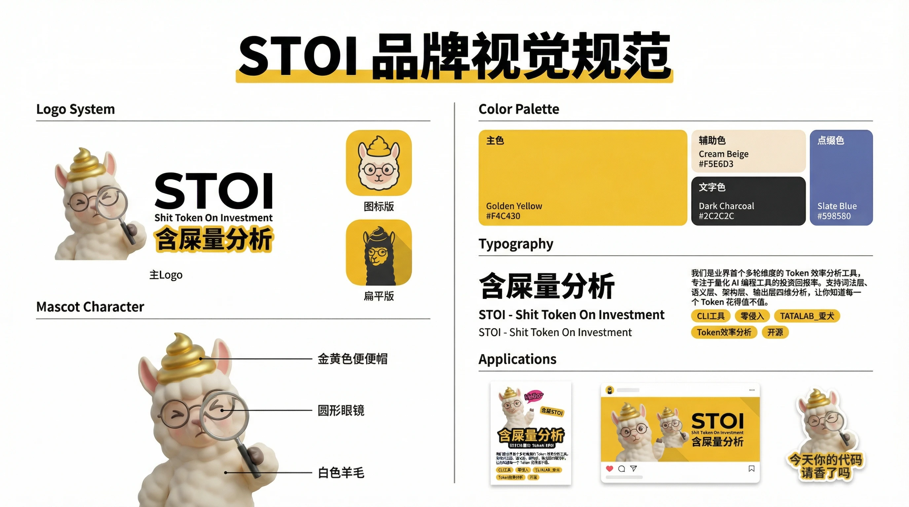

算力狂欢
与草台班子
STOI 诞生记
「如果一个年薪 50 万美元的工程师，一年烧不掉 25 万美元的 Token，我会感到极度不安。」
黄仁勋 英伟达 CEO「顶尖工程师消耗的 Token 成本已经与工资相当，但换来的是 10 倍生产力提升。」
安德鲁·博斯沃思 Meta CTOTokenmaxxing 的狂欢
现在，整个硅谷、乃至全球的科技行业都陷入了一种叫做 Tokenmaxxing（算力最大化） 的狂欢里。老板们在疯狂撒钱，开发者们在疯狂调用 API。仿佛只要你烧的 Token 足够多，账单足够厚，你就是世界上最牛的十倍工程师，正在用最前沿的魔法改变世界。
听起来让人热血沸腾，对吧？
但事实真的如此吗？
当我们满怀敬畏地扒开诸如 Claude Code 这类顶级 AI 工具的底层源码时，我们没有看到高深莫测的魔法，我们只看到了一个精心设计的账单加速器。
系统提示词里，竟然硬编码着时间戳。这意味着什么？意味着时间每跳动一秒，你的上下文缓存（KV-Cache）就全部击穿、全面失效！
你在那儿以为 AI 正在为你深度思考架构，其实 Anthropic 只是用这个设计在疯狂重复加载毫无意义的废话。很难不怀疑他们这是想赚我们的 Token 钱，太坏了。
这根本不是什么「生产力投资」，这就是纯纯的 Token 刺客。
当全行业都在为 Tokenmaxxing 鼓掌的时候，STOI 站在这里，只想冷冷地问一个问题：
你们烧掉的这几十万美金的 Token，到底有多少变成了高价值的代码，又有多少……只是被无情浪费掉的「屎」？
逃离「班味」：
48 小时的巨大玩具
这就是我们要做 STOI 的原因。但说实话，这个显得有些尖锐的产品，它的起点其实非常荒诞且简单。
第一天走进张江科学会馆，一进门就看到一句话——「48 小时给世界制造一个巨大的玩具」。那一刻我就在想，我们到底要做个什么东西？它不一定非得是马上就能完美落地的商业巨作，但它一定要言之有物，要能跟当下的荒诞现实呼应得上。
有意思的是，STOI 的灵感，来自一次厕所里的闲聊。
我们几个人挤在洗手池旁边，聊到各自项目里那些被 AI 烧掉的冤枉钱，越聊越好笑——为什么从来没人认真算过这笔账？和懂你的人在一起吐槽一件荒诞的事，这本身就是极大的快乐。聊着聊着，我们突然想：不如策划一个「更大」的项目，把这笔糊涂账算清楚。
和懂你的人在一起做一件好玩的事，这本身就是极大的快乐。我们一开始甚至想做得很离谱：加个 TTS 语音播报，在你敲代码的时候，系统直接在旁边大声朗读你现在的「代码含屎量」。
就是这么一个看似恶搞的起点，推着我们往下走。
相信「相信的力量」
在这个过程中，我一直在问自己：我们来黑客松到底是为了什么？
如果我们换了一个地方，结果还是在开会、激烈地争论对错、字斟句酌地搞汇报对齐……那这东西一点都不「黑客松」。
逃离按部就班
黑客松的意义，就是要你从日复一日的工作里短暂抽离出来。
极速交付
用最快、最极限的方式，交付给世界一个可以运行、有技术底色、能狠狠戳中现状的东西。
竭尽全力
在 48 小时内拼尽全力，看看我们到底能走到哪里，这就够了。
现在的世界，不缺完美的 PPT，也不缺严丝合缝的流程。很多真正有意思的创业者，都在做自己真正喜欢的、感兴趣的东西。
对于我们来说，STOI 就是我们这 48 小时交出的答卷。始终相信「相信的力量」。
这，就足够了。

准备好加入这场审计了吗？
让我们一起，把无意识烧掉的 Token，变成真正看得见产出的投资。